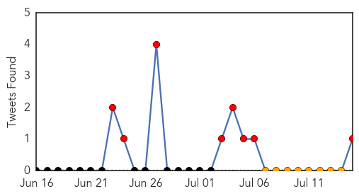
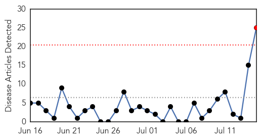

Ebola
30-Day Web Trend
14 alerts, 10 warnings

30-Day Twitter Trend
1 alerts, 1 warnings

Article Locations

Article Confidences

Top Articles:
- 1.000
- Ebola crisis in West Africa deepens; 539 dead
- 1.000
- Why West African governments are struggling in response to Ebola
- 1.000
- Ireland commits a further €144K to fight worst Ebola outbreak in history
- 1.000
- As Ebola Virus Rampages In West Africa, Health Care Workers Continue To Face Hostility
- 1.000
- Ebola death toll crosses 600
- 1.000
- West Africa Ebola toll tops 600: WHO
- 1.000
- Ebola crisis in West Africa deepens; 500+ dead
- 1.000
- Nigerian News from Leadership News
- 1.000
- Ebola virus waning?
- 0.999
- No Quick End in Sight for Ebola Epidemic in West Africa
- 0.999
- Ebola: UN agency to help West Africa coordinate response to 'unprecedented' outbreak
- 0.999
- West Africa Ebola Death Toll Hits 600 as Virus Kills 68 in Four Days
- 0.999
- Ebola: UN agency to help West Africa coordinate response to 'unprecedented' outbreak
- 0.999
- Ghana, Business Advice, Jobs, News, Business Directory, Real Estate, Finance, Forms, Auto
- 0.999
- Ebola: UN agency to help West Africa coordinate response to 'unprecedented' outbreak
- 0.999
- Ebola: UN agency to help West Africa coordinate response to 'unprecedented' outbreak
- 0.999
- Minister Costello announces additional funding to help fight Ebola in West Africa
- 0.998
- Minister Costello announces additional funding to help fight Ebola in West Africa - Sierra Leone
- 0.998
- Fighting Ebola "by the grace of God" - Liberia
- 0.998
- MoHS Schools the media on Ebola « Awoko Newspaper
- 0.996
- Fighting Ebola “by the grace of God”
- 0.994
- Ebola's Fatal Impetus: Fear
- 0.993
- UPDATE 2-Death toll from West Africa Ebola outbreak jumps to 603 - WHO
- 0.993
- UPDATE 2-Death toll from West Africa Ebola outbreak jumps to 603 - WHO
- 0.990
- Death toll from West Africa Ebola outbreak jumps to 603 -WHO
- 0.989
- Ivory Coast Blocks Refugees Amid Ebola Fears
- 0.984
- Ivory Coast blocks refugees amid Ebola fears
- 0.980
- Court rules Texas can't ban sale of Confederate flag license plates
- 0.980
- Marissa Mayer 'not satisfied' with Yahoo's poor second-quarter results
- 0.980
- Checking in with Ocean City's mayor
- 0.980
- Safety concerns spur new rules for water jet packs in Maryland
- 0.980
- Parents of Ellicott City derailment victims speak out, say they blame CSX for deaths
- 0.980
- Dangerously Delicious' Rodney Henry is taking 'pie style' to Austin
- 0.980
- The death of Damaud Martin: Looking but not seeing [Editorial]
- 0.980
- Annapolis orders Uber to register
- 0.980
- Memorial Service Held For 12-Year-Old Killed By Fallen Tree At Summer Camp
- 0.980
- Restaurant complaints on the rise
- 0.980
- SUN INVESTIGATES Maryland lawmakers, child advocates seek probe into oversight of troubled group home
- 0.980
- Former Maryland veterans official pleads guilty in claims scheme
- 0.980
- SUN INVESTIGATES VA document problems caused payment delays
- 0.980
- Lawmakers draft bill on children immigrants
- 0.980
- Yahoo CEO 'skeptical' about merger with AOL
- 0.980
- Former VA official guilty in $1.4M fraud scheme
- 0.980
- Coast Guard searching for man near Francis Scott Key Bridge
- 0.980
- Five myths about the latest Gaza crisis
- 0.980
- Labor’s LIRR strike miscalculation
- 0.980
- Óli Palli On World Cafe
- 0.980
- Trump Plaza is latest Atlantic City casino set to close (Video)
- 0.980
- Here are the best financing options for early-stage companies
- 0.977
- CDC Mishaps Could Have Been Deadly, Experts Say
Showing top 50 articles...
Top Tweets:
- 0.810
- Update on West African ebola outbreak & response; NIH alters NSABB membership. HealthSecurity http://t.co/H1JhGCUg02
Cholera
30-Day Web Trend
1 alerts, 0 warnings

30-Day Twitter Trend
0 alerts, 0 warnings

Article Locations

Article Confidences
Top Articles:
- 0.998
- Total of 80 people have died of cholera in South Sudan – MSF
- 0.995
- Ban Ki-moon: UN to help Haiti fight cholera epidemic
- 0.993
- UN Chief Makes 'Pilgrimage' to Haiti to Address Cholera Crisis
- 0.992
- U.N. chief makes 'pilgrimage' to Haiti to address cholera crisis
- 0.992
- UN chief Ban Ki-moon makes 'pilgrimage' to Haiti to address cholera crisis
- 0.992
- Ghana, Business Advice, Jobs, News, Business Directory, Real Estate, Finance, Forms, Auto
- 0.991
- U.N. chief makes 'pilgrimage' to Haiti to address cholera crisis
- 0.986
- Ban Ki Moon displays strong UN commitment to eradicate cholera in Haiti
- 0.981
- Ban Ki Moon visits Haiti - americas - world
- 0.980
- UN chief in Haiti launches sanitation program
- 0.979
- UN leader focuses on cholera in Haiti - World News
- 0.978
- UN leader vows to help Haiti fight cholera epidemic
- 0.972
- UN leader vows to help Haiti fight cholera epidemic
- 0.971
- In Haiti, Ban calls for greater efforts to improve water and sanitation, end cholera epidemic
- 0.968
- UN chief in Haiti launches sanitation program
- 0.967
- UN Chief Launches Sanitation Program in Haiti
- 0.967
- UN leader visits cholera struck Haiti
- 0.965
- UN Chief Pledges To Help Haitians End Cholera Scourge
- 0.957
- U.N. Leader Vows to Help Haiti Fight Cholera Epidemic — Naharnet
- 0.955
- UN chief makes ‘pilgrimage’ to Haiti to address cholera crisis
- 0.948
- UN leader vows to help Haiti fight cholera epidemic
- 0.905
- Politic : Towards water and sanitation services for over 3 million Haitians
- 0.845
- UN chief in Haiti launches sanitation program
- 0.706
- Dangerous bacteria infects several in Talbot
- 0.547
- Border Crisis Leads Conservatives to Claim Child Migrants Are Diseased
Top Tweets:
-
No tweets found for Jul 15, 2014